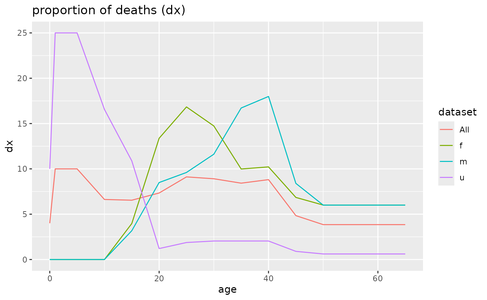
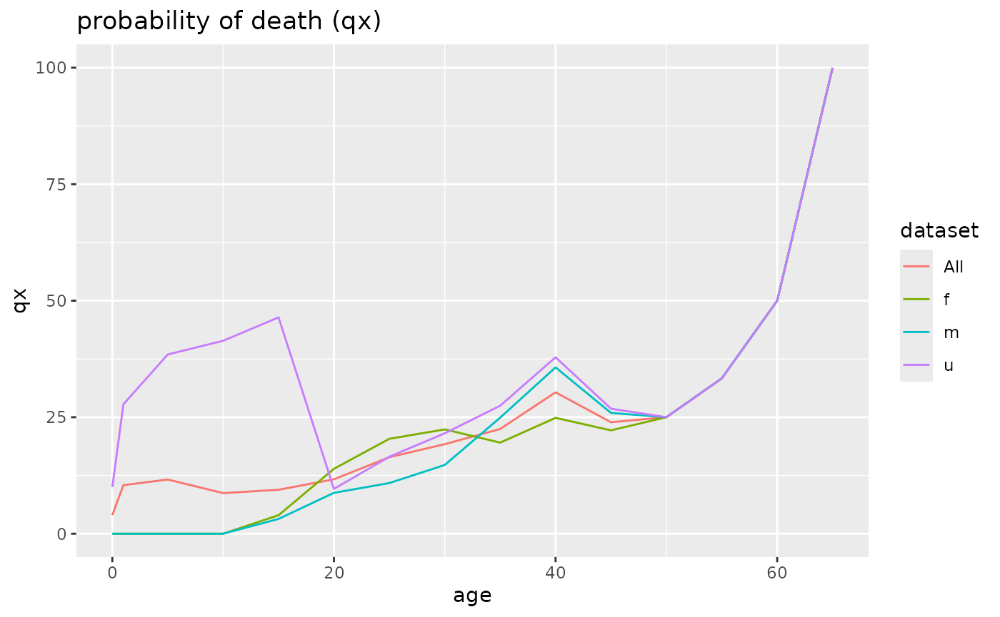
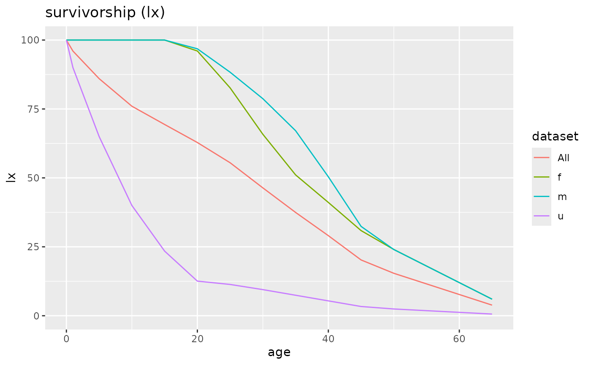
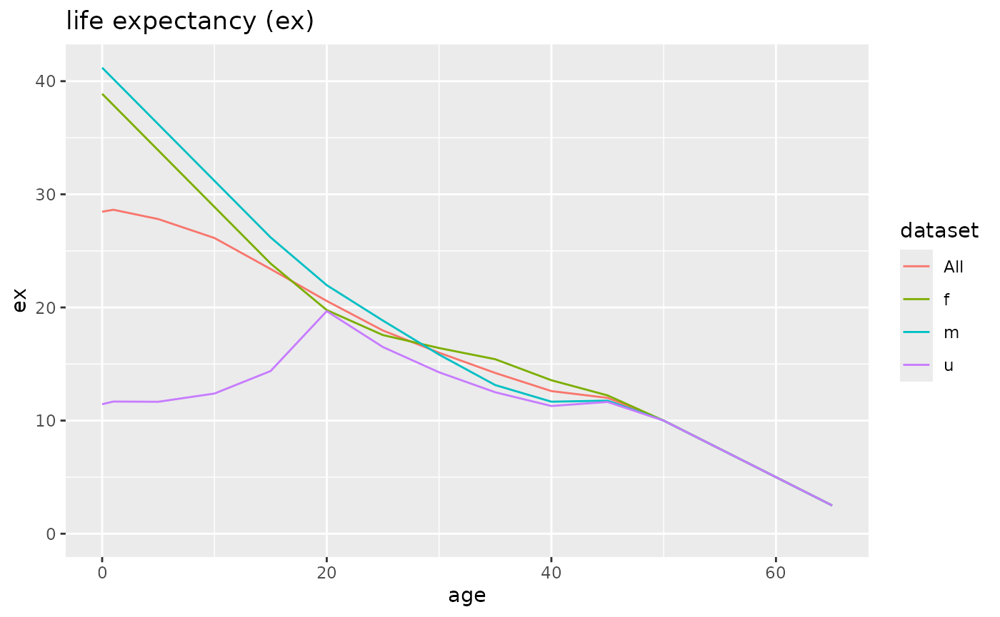
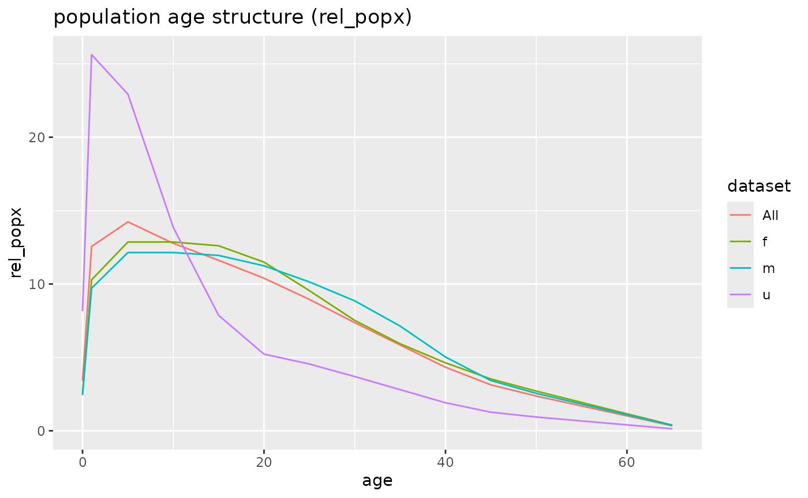
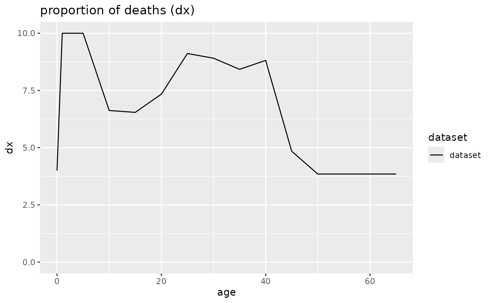
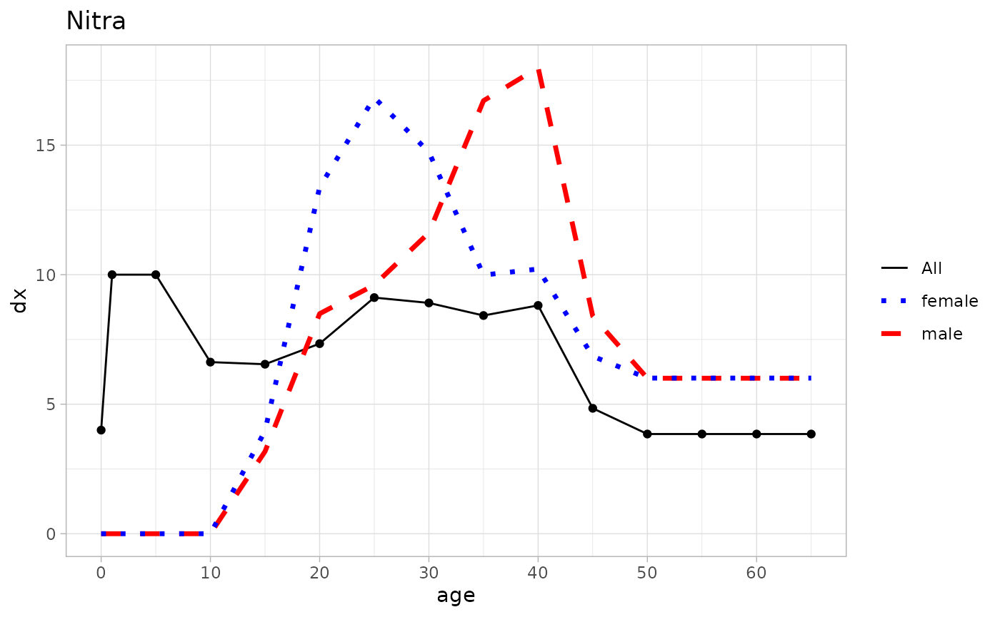

mortAAR is supposed to ease the import and display
of archaeological life table data as well as to offer more advanced
functions. The general idea behind life tables and the implementation in
mortAAR is explained in the vignette("background"). This
introduction gets you started with the import of different data sets,
the computation of life tables and finally the plotting of life
tables.
Import of data
The import of data is controlled by the function
mortAAR::prep.life.tabe(). In most cases, the data set will
contain one row per individual with the respective age ranges, similar
to the example of the cemetery of Nitra.
## X no sex age_start age_end
## 1 1 1 f 20 25
## 2 2 2 m 36 45
## 3 3 3 u 13 17
## 4 4 4_1 u 13 17
## 5 5 4_2 f 26 35
## 6 6 4_3 m 36 45
nitra_prep <- prep.life.table(nitra, group = "sex", agebeg = "age_start", ageend = "age_end", agerange = "included")Please note that the data set has an ID column (no), a
grouping column with the sex of the individuals as well as two columns
containing the start and end of the age ranges. The end age is
“inclusive” which means that there are no overlaps between the age
categories.
In other cases, the data might already have been aggregated, e. g. in a published life table as in the example Aiterhofen-Ödmühlen.
head(mortAAR::aiterhofen_oedmuehlen)## Alter a Dx Sx qx lx dx Lx Tx
## 1 0 5 4.20 107.00000 0.039252 1000.0000 39.25233 4901.869 26773.570
## 2 5 5 4.26 102.80000 0.041504 960.7476 39.87538 4704.049 21871.700
## 3 10 5 8.67 98.53333 0.088018 920.8722 81.05352 4401.727 17167.650
## 4 15 5 14.20 89.86060 0.158022 839.8187 132.71020 3867.318 12765.930
## 5 20 5 14.73 75.66060 0.194809 707.1084 137.75130 3191.163 8898.612
## 6 25 5 17.37 60.92121 0.285216 569.3571 162.39020 2440.809 5707.448
## ex rel.Bevx
## 1 26.77357 18.308600
## 2 22.76529 17.569740
## 3 18.64282 16.440560
## 4 15.20081 14.444530
## 5 12.58450 11.919070
## 6 10.02437 9.116488
aiterhofen_prep <- mortAAR::prep.life.table(aiterhofen_oedmuehlen, dec = "Dx", agebeg = "Alter", method = "Equal5")In this case, the column with the number of deceased
(dec) has to be named and the method of aggregation has to
be changed to Equal5 as no differentiation is made in the
youngest age category.
Displaying the life table
If the data has been prepared as above, it is easy to generate a life
table with the command life.table().
mortAAR::life.table(aiterhofen_prep)##
## mortAAR life table (n = 106.49 individuals)
##
## Life expectancy at birth (e0): 26.584
##
## x a Ax Dx dx lx qx Lx Tx ex rel_popx
## 1 0--4 5 1.667 4.20 3.944 100.000 3.944 486.853 2658.442 26.584 18.313
## 2 5--9 5 2.500 4.26 4.000 96.056 4.165 470.279 2171.589 22.608 17.690
## 3 10--14 5 2.500 8.67 8.142 92.056 8.844 439.924 1701.310 18.481 16.548
## 4 15--19 5 2.500 14.20 13.335 83.914 15.891 386.233 1261.386 15.032 14.529
## 5 20--24 5 2.500 14.73 13.832 70.579 19.598 318.316 875.153 12.400 11.974
## 6 25--29 5 2.500 17.37 16.311 56.747 28.744 242.957 556.836 9.813 9.139
## 7 30--34 5 2.500 18.12 17.016 40.436 42.081 159.639 313.879 7.762 6.005
## 8 35--39 5 2.500 12.46 11.701 23.420 49.960 87.849 154.240 6.586 3.305
## 9 40--44 5 2.500 6.78 6.367 11.719 54.327 42.680 66.391 5.665 1.605
## 10 45--49 5 2.500 3.95 3.709 5.353 69.298 17.490 23.711 4.430 0.658
## 11 50--54 5 2.500 1.30 1.221 1.643 74.286 5.165 6.221 3.786 0.194
## 12 55--59 5 2.500 0.45 0.423 0.423 100.000 1.056 1.056 2.500 0.040For plotting the resulting life table indices, it is advisable to store the results. If a grouping variable had been specified, a separate life table is generated for each group.
nitra_lt <- mortAAR::life.table(nitra_prep)
nitra_lt##
##
## mortAAR life table for sex: f (n = 27 individuals)
##
## Life expectancy at birth (e0): 38.882
##
## x a Ax Dx dx lx qx Lx Tx ex rel_popx
## 1 0--0 1 0.333 0.000 0.000 100.000 0.000 100.000 3888.230 38.882 2.572
## 2 1--4 4 1.333 0.000 0.000 100.000 0.000 400.000 3788.230 37.882 10.287
## 3 5--9 5 2.500 0.000 0.000 100.000 0.000 500.000 3388.230 33.882 12.859
## 4 10--14 5 2.500 0.000 0.000 100.000 0.000 500.000 2888.230 28.882 12.859
## 5 15--19 5 2.500 1.071 3.968 100.000 3.968 490.079 2388.230 23.882 12.604
## 6 20--24 5 2.500 3.612 13.377 96.032 13.930 446.715 1898.151 19.766 11.489
## 7 25--29 5 2.500 4.545 16.834 82.654 20.367 371.186 1451.436 17.560 9.546
## 8 30--34 5 2.500 3.979 14.735 65.820 22.387 292.262 1080.250 16.412 7.517
## 9 35--39 5 2.500 2.696 9.986 51.085 19.548 230.458 787.988 15.425 5.927
## 10 40--44 5 2.500 2.759 10.218 41.099 24.863 179.947 557.529 13.566 4.628
## 11 45--49 5 2.500 1.849 6.850 30.880 22.182 137.277 377.582 12.227 3.531
## 12 50--54 5 2.500 1.622 6.008 24.031 25.000 105.133 240.305 10.000 2.704
## 13 55--59 5 2.500 1.622 6.008 18.023 33.333 75.095 135.172 7.500 1.931
## 14 60--64 5 2.500 1.622 6.008 12.015 50.000 45.057 60.076 5.000 1.159
## 15 65--69 5 2.500 1.622 6.008 6.008 100.000 15.019 15.019 2.500 0.386
##
## mortAAR life table for sex: m (n = 18 individuals)
##
## Life expectancy at birth (e0): 41.192
##
## x a Ax Dx dx lx qx Lx Tx ex rel_popx
## 1 0--0 1 0.333 0.000 0.000 100.000 0.000 100.000 4119.151 41.192 2.428
## 2 1--4 4 1.333 0.000 0.000 100.000 0.000 400.000 4019.151 40.192 9.711
## 3 5--9 5 2.500 0.000 0.000 100.000 0.000 500.000 3619.151 36.192 12.138
## 4 10--14 5 2.500 0.000 0.000 100.000 0.000 500.000 3119.151 31.192 12.138
## 5 15--19 5 2.500 0.571 3.175 100.000 3.175 492.063 2619.151 26.192 11.946
## 6 20--24 5 2.500 1.529 8.492 96.825 8.770 462.897 2127.087 21.968 11.238
## 7 25--29 5 2.500 1.729 9.603 88.333 10.872 417.659 1664.190 18.840 10.139
## 8 30--34 5 2.500 2.091 11.617 78.730 14.756 364.608 1246.532 15.833 8.852
## 9 35--39 5 2.500 3.009 16.715 67.113 24.906 293.778 881.924 13.141 7.132
## 10 40--44 5 2.500 3.238 17.990 50.398 35.695 207.016 588.146 11.670 5.026
## 11 45--49 5 2.500 1.512 8.400 32.408 25.918 141.043 381.130 11.760 3.424
## 12 50--54 5 2.500 1.080 6.002 24.009 25.000 105.038 240.087 10.000 2.550
## 13 55--59 5 2.500 1.080 6.002 18.007 33.333 75.027 135.049 7.500 1.821
## 14 60--64 5 2.500 1.080 6.002 12.004 50.000 45.016 60.022 5.000 1.093
## 15 65--69 5 2.500 1.080 6.002 6.002 100.000 15.005 15.005 2.500 0.364
##
## mortAAR life table for sex: u (n = 30 individuals)
##
## Life expectancy at birth (e0): 11.448
##
## x a Ax Dx dx lx qx Lx Tx ex rel_popx
## 1 0--0 1 0.333 3.000 10.000 100.000 10.000 93.333 1144.791 11.448 8.153
## 2 1--4 4 1.333 7.500 25.000 90.000 27.778 293.333 1051.458 11.683 25.623
## 3 5--9 5 2.500 7.500 25.000 65.000 38.462 262.500 758.124 11.663 22.930
## 4 10--14 5 2.500 4.968 16.561 40.000 41.404 158.596 495.624 12.391 13.854
## 5 15--19 5 2.500 3.264 10.881 23.439 46.423 89.991 337.028 14.379 7.861
## 6 20--24 5 2.500 0.362 1.208 12.558 9.621 59.768 247.037 19.672 5.221
## 7 25--29 5 2.500 0.562 1.875 11.350 16.519 52.061 187.269 16.500 4.548
## 8 30--34 5 2.500 0.612 2.041 9.475 21.547 42.270 135.209 14.270 3.692
## 9 35--39 5 2.500 0.612 2.041 7.433 27.464 32.062 92.939 12.503 2.801
## 10 40--44 5 2.500 0.612 2.041 5.392 37.863 21.855 60.876 11.291 1.909
## 11 45--49 5 2.500 0.270 0.899 3.350 26.822 14.505 39.021 11.647 1.267
## 12 50--54 5 2.500 0.184 0.613 2.452 25.000 10.726 24.516 10.000 0.937
## 13 55--59 5 2.500 0.184 0.613 1.839 33.333 7.661 13.790 7.500 0.669
## 14 60--64 5 2.500 0.184 0.613 1.226 50.000 4.597 6.129 5.000 0.402
## 15 65--69 5 2.500 0.184 0.613 0.613 100.000 1.532 1.532 2.500 0.134
##
## mortAAR life table for sex: All (n = 75 individuals)
##
## Life expectancy at birth (e0): 28.463
##
## x a Ax Dx dx lx qx Lx Tx ex rel_popx
## 1 0--0 1 0.333 3.000 4.000 100.000 4.000 97.333 2846.275 28.463 3.420
## 2 1--4 4 1.333 7.500 10.000 96.000 10.417 357.333 2748.942 28.635 12.554
## 3 5--9 5 2.500 7.500 10.000 86.000 11.628 405.000 2391.609 27.809 14.229
## 4 10--14 5 2.500 4.968 6.625 76.000 8.717 363.439 1986.609 26.140 12.769
## 5 15--19 5 2.500 4.907 6.543 69.375 9.431 330.520 1623.170 23.397 11.612
## 6 20--24 5 2.500 5.503 7.337 62.833 11.677 295.820 1292.650 20.573 10.393
## 7 25--29 5 2.500 6.836 9.115 55.495 16.425 254.689 996.830 17.962 8.948
## 8 30--34 5 2.500 6.682 8.909 46.380 19.210 209.628 742.141 16.001 7.365
## 9 35--39 5 2.500 6.317 8.423 37.471 22.479 166.297 532.513 14.211 5.843
## 10 40--44 5 2.500 6.610 8.813 29.048 30.339 123.207 366.216 12.607 4.329
## 11 45--49 5 2.500 3.631 4.841 20.235 23.925 89.072 243.009 12.009 3.129
## 12 50--54 5 2.500 2.886 3.848 15.394 25.000 67.348 153.937 10.000 2.366
## 13 55--59 5 2.500 2.886 3.848 11.545 33.333 48.105 86.590 7.500 1.690
## 14 60--64 5 2.500 2.886 3.848 7.697 50.000 28.863 38.484 5.000 1.014
## 15 65--69 5 2.500 2.886 3.848 3.848 100.000 9.621 9.621 2.500 0.338Plotting the results
A complete set of all indices of the life table is generated with the
command plot(). The lines of the groups (if specified) are
displayed as line types (default) or with different colours.
plot(nitra_lt, line_vis = "colour")
It is, of course, also possible to address the life tables individually to only display or plot a subset. It is also possible to limit the plots to certain types.
plot(nitra_lt$All, display = "dx")
If more control is desired, for example to create customized plots in
ggplot2::ggplot(), this is also possible. The following
takes the life tables from the Nitra example and creates a ggplot
diagram with combinations of line types and colours. Please note how the
x-axis is created with the column a from the life table
which contains the length of each age class.
library(ggplot2)
ggplot(nitra_lt$All, aes(x=c(0,cumsum(a)[-nrow(nitra_lt$All)]), y=dx)) +
geom_point() +
geom_line(aes(col = "All")) +
scale_x_continuous(breaks=seq(0, 70, 10)) +
labs(title="Nitra", x = "age", y = "dx") +
geom_line(data=nitra_lt$m, aes(col= "male"), linewidth=1.2, linetype="dashed") +
geom_line(data=nitra_lt$f, aes(col= "female"), linewidth=1.2, linetype="dotted") +
scale_colour_manual(values = c("black", "blue","red")) + theme_light() +
theme( legend.title = element_blank())
Going further
Hopefully, the above has succeeded in giving an overview how to use
the basic functions of mortAAR. Two further worked examples can be found
in the vignette("example_1") and
vignette("example_2"). The former deals especially with
data preparation while the latter also covers the use case to combine
two life tables in a joined analysis.
More advanced functions of mortAAR deal with testing the
representativeness and the subsequent correction of life tables
(explained in the vignette("lt_correction")) as well as the
computation of reproduction indices
(vignette("reproduction")).